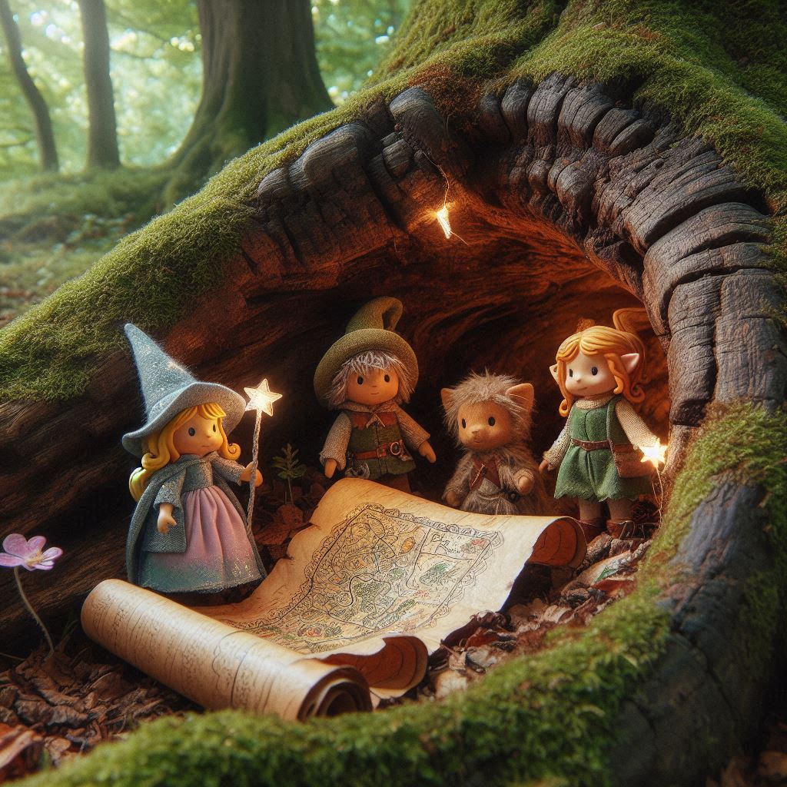

The Adventures of Sparkle the Brave
Chapter 1: The Shiny New Friend
In the quiet town of Willowvale, a curious and cheerful kitten named Sparkle discovers a shiny golden key hidden under a pile of autumn leaves. Excited, she shows it to her best friends, Pip the squirrel and Bella the bluebird. Together, they wonder what the key might unlock.
Chapter 2: The Mysterious Map
While playing near the old oak tree, Sparkle and her friends find a rolled-up map tucked into a hollow trunk. The map shows a path leading through the Enchanted Forest to a place marked with an "X." Could it be a treasure? They decide to follow the map—but not without preparing for their adventure.
Chapter 3: Into the Enchanted Forest

The trio ventures into the Enchanted Forest, where trees whisper secrets and flowers glow softly in the shade. They meet a wise old turtle named Mr. Snap, who warns them of tricky riddles they’ll need to solve to reach their destination.
Chapter 4: The Bridge of Riddles

Soon, Sparkle and her friends come across a rickety bridge guarded by a fox named Felix. Felix refuses to let them pass unless they answer three riddles. With teamwork and clever thinking, they solve the riddles and cross the bridge safely.
Chapter 5: The Giggle Berries

Hungry and tired, the friends stop in a clearing filled with bushes of bright purple berries. A friendly hedgehog named Holly warns them that eating the berries will make them giggle uncontrollably for an hour. Despite the warning, Pip takes a bite and sets everyone laughing as they roll on the forest floor.
Chapter 6: The Whispering Cave

The map leads them to a dark cave with glowing walls that seem to whisper. Inside, they find glowing stones and must arrange them in the correct order to reveal the next clue. Sparkle’s sharp eyes help them solve the puzzle, and the next part of the map is revealed.
Chapter 7: The Friendly Giant

The group encounters a gentle giant named Grumble who is blocking their path. Grumble’s shoes are stuck in the mud, and he’s too embarrassed to ask for help. Sparkle and her friends work together to free him, and in return, Grumble gives them a boost over a tall hedge.
Chapter 8: The Hidden Garden

Beyond the hedge, they find a secret garden filled with magical flowers that sing when the wind blows. In the center of the garden is a golden chest. Sparkle’s golden key fits perfectly, and they open the chest to find a beautiful book titled *The Secrets of Kindness*.
Chapter 9: The Power of Kindness

The book contains magical stories and lessons about helping others and being brave. Sparkle and her friends realize that their acts of kindness throughout the journey were part of unlocking the treasure. The book glows brightly and fills them with warmth and happiness.
Chapter 10: Sharing the Treasure

Sparkle and her friends return to Willowvale, bringing the book with them. They share its stories with everyone in town, inspiring others to be kind and brave. The once-quiet town becomes a place filled with laughter, love, and new adventures waiting to happen.